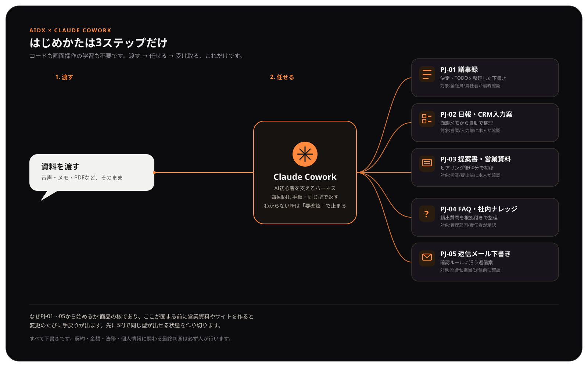

PROJECT 01 · LIVE
AIDX
AI DX ROI診断の公開版と、診断・シミュレーション、運用説明資料の入口です。
← プロジェクトハブへ戻る内部向け資料
関係者への説明や、自分用の確認に使うAI DX関連資料です。項目ごとに原寸表示できます。
引き継ぎ資料一覧(2026-07-21 反映)
Claude Cowork仕様化作業の成果物です。各リンクはMarkdown原文を表示します。最新版のみ掲載しています。
- 案件フォルダテンプレート表紙(顧客向け表紙テキスト)v0.1
- PJ-01 議事録・決定事項・TODO化 Claude Cowork仕様v0.3
- PJ-02 日報・CRM入力支援 Claude Cowork仕様v0.2
- PJ-03 営業資料・提案書作成 Claude Cowork仕様v0.2
- PJ-04 FAQ・社内ナレッジ整備 Claude Cowork仕様v0.2
- PJ-05 メール・問い合わせ回答 Claude Cowork仕様v0.2
- QA-0X 手動再監査プロンプト(5PJ分)v0.1
- PJ-01 再現性テスト仕様(ゴールデンテスト4系統)v0.2
- AI利用ルール 標準雛形v0.1
- AI利用ルール 顧客向けマニュアルv0.1
- 音声データ取扱いと同意(顧客向け)v0.1
- 【内部参考・旧版】PJ別プロンプト集 v1.0 統合版(Cowork移行前の経緯資料)v1.0
- 成果物一覧(manifest.csv)CSV
このページは検索除外設定ですが、公開URLを知る人は閲覧できます。顧客固有情報や機密資料は追加しないでください。